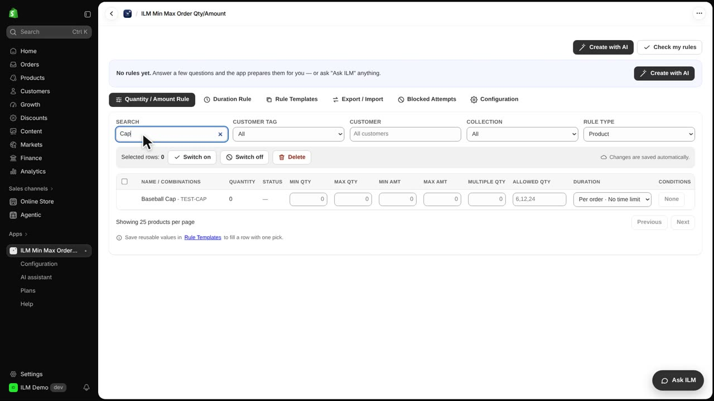
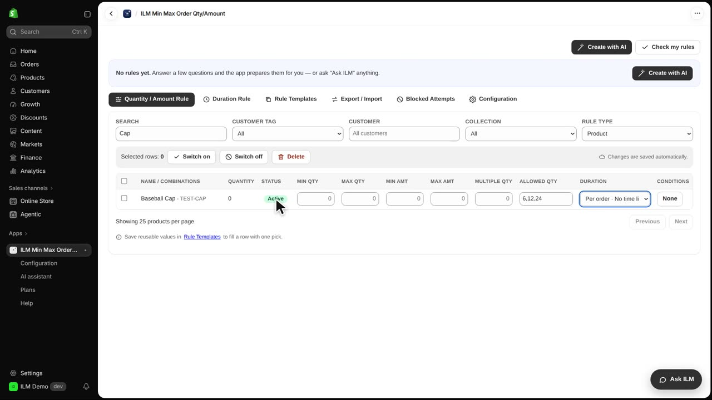
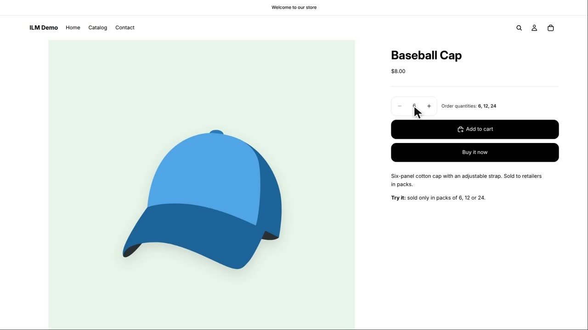
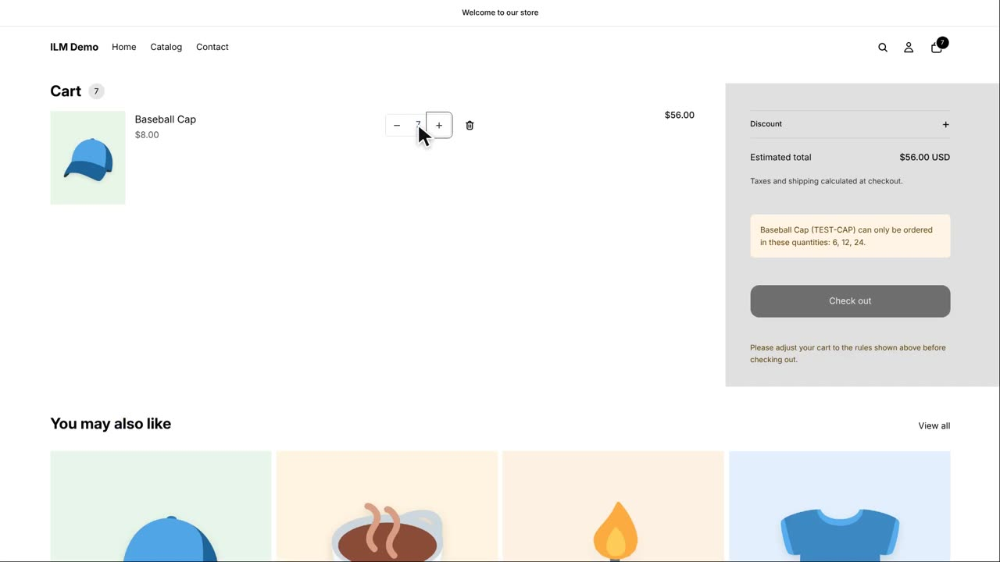
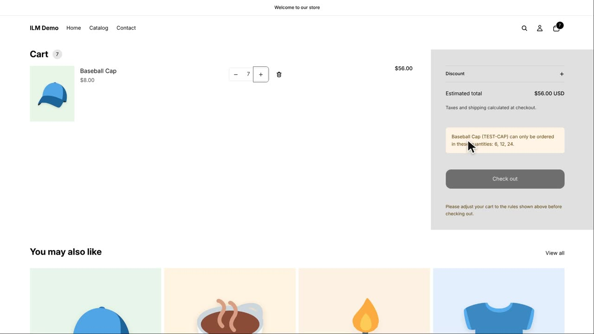
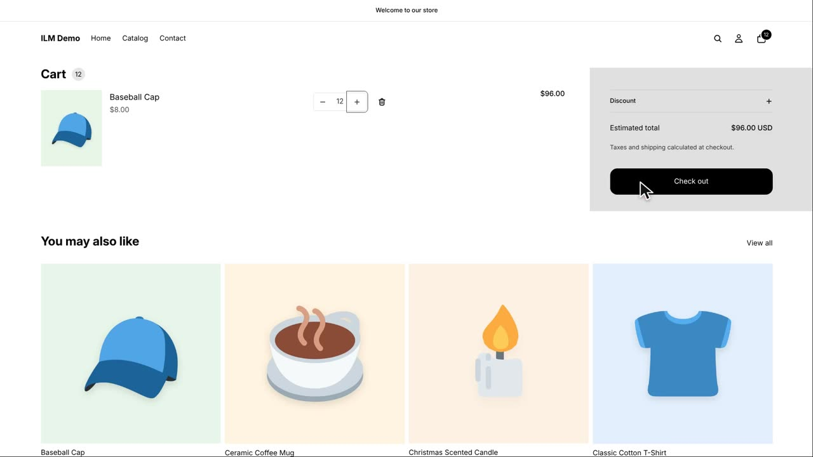

Allowed quantities is a rule that lets you list the exact quantities a shopper can order for a product. Instead of any number, you allow only a fixed set, like six, twelve or twenty-four. This is handy for products sold in packs or cases, where odd numbers don't make sense. Today we'll set it up for the Baseball Cap and see what happens when a shopper tries seven.
First, we search for the Baseball Cap in the rule grid. Typing part of the name filters the list so you can find the product quickly. This is the same grid where all your quantity and amount rules live.

In the Allowed Qty field for the Baseball Cap, we type the allowed quantities separated by commas: six, twelve, twenty-four. Then we click outside the field to save. The rule becomes active right away, as you can see from the Active label.

On the storefront, the product page now shows an info line listing the allowed quantities. The quantity box also starts at six, the first allowed value. Shoppers know exactly which quantities they can choose before adding to cart.

We add six to the cart, which is allowed. Then we go to the cart page and change the quantity to seven. This simulates a shopper trying an invalid number.

Seven is not in the allowed list, so the cart shows a notice explaining which quantities are allowed. Checkout is locked until the shopper fixes the quantity. This prevents orders that don't match your rules.

We change the quantity to twelve, which is in the list. The notice disappears and the checkout button becomes active again. The shopper can now complete the order.
